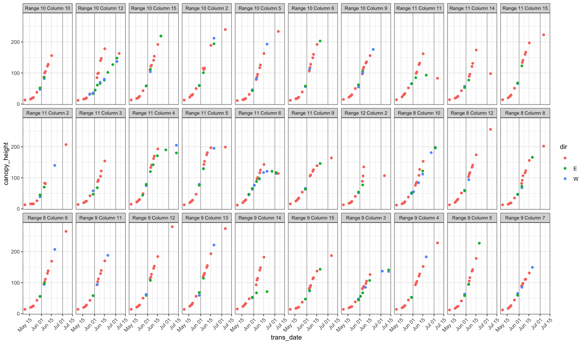
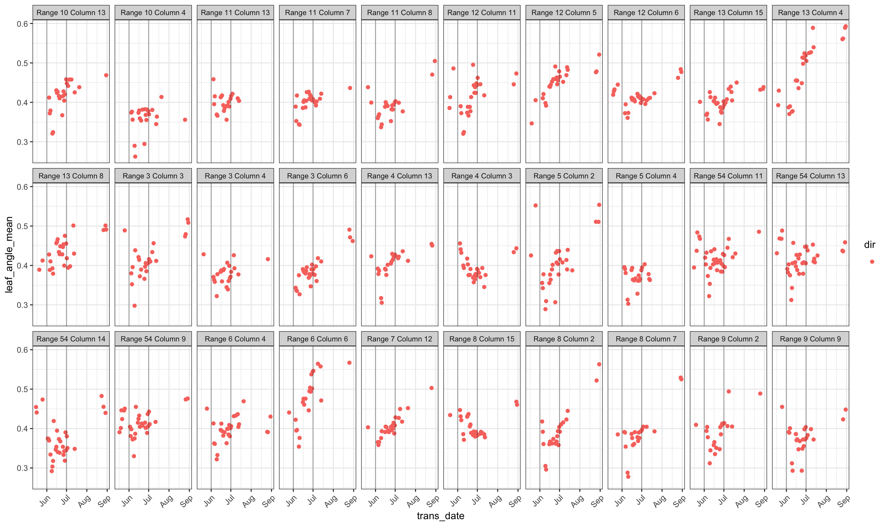
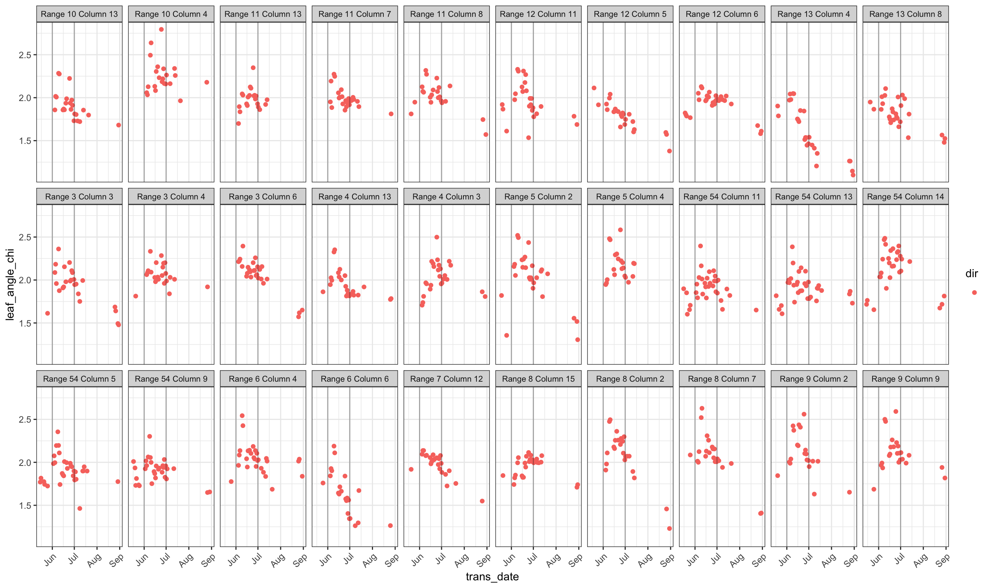
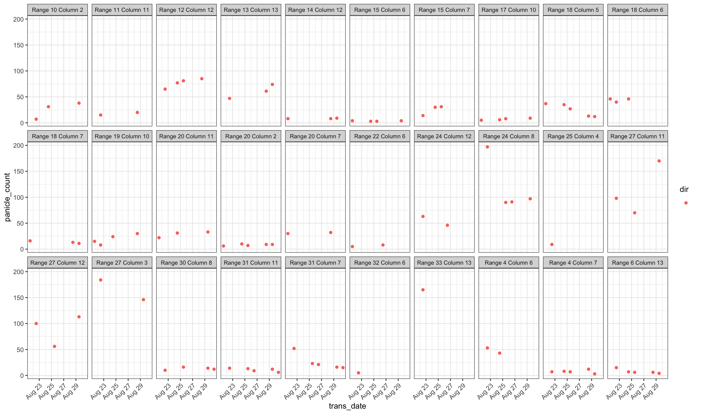

Exploratory Analysis
Last updated: 2020-01-28
Checks: 6 1
Knit directory: terra2/
This reproducible R Markdown analysis was created with workflowr (version 1.6.0). The Checks tab describes the reproducibility checks that were applied when the results were created. The Past versions tab lists the development history.
The R Markdown is untracked by Git. To know which version of the R Markdown file created these results, you’ll want to first commit it to the Git repo. If you’re still working on the analysis, you can ignore this warning. When you’re finished, you can run wflow_publish to commit the R Markdown file and build the HTML.
Great job! The global environment was empty. Objects defined in the global environment can affect the analysis in your R Markdown file in unknown ways. For reproduciblity it’s best to always run the code in an empty environment.
The command set.seed(20200123) was run prior to running the code in the R Markdown file. Setting a seed ensures that any results that rely on randomness, e.g. subsampling or permutations, are reproducible.
Great job! Recording the operating system, R version, and package versions is critical for reproducibility.
Nice! There were no cached chunks for this analysis, so you can be confident that you successfully produced the results during this run.
Great job! Using relative paths to the files within your workflowr project makes it easier to run your code on other machines.
Great! You are using Git for version control. Tracking code development and connecting the code version to the results is critical for reproducibility. The version displayed above was the version of the Git repository at the time these results were generated.
Note that you need to be careful to ensure that all relevant files for the analysis have been committed to Git prior to generating the results (you can use wflow_publish or wflow_git_commit). workflowr only checks the R Markdown file, but you know if there are other scripts or data files that it depends on. Below is the status of the Git repository when the results were generated:
Ignored files:
Ignored: .DS_Store
Ignored: data/.DS_Store
Untracked files:
Untracked: _ignore/
Untracked: analysis/datapreprocess.Rmd
Untracked: analysis/exploratory.Rmd
Untracked: analysis/style.css
Untracked: code/code.R
Untracked: code/dataprep.R
Untracked: data/mldat_july1.csv
Untracked: data/mldat_june1.csv
Untracked: data/raw/
Untracked: data/seas4.Rdata
Unstaged changes:
Modified: analysis/_site.yml
Note that any generated files, e.g. HTML, png, CSS, etc., are not included in this status report because it is ok for generated content to have uncommitted changes.
There are no past versions. Publish this analysis with wflow_publish() to start tracking its development.
In preprocessing, we cleaned up the raw TERRA data. It is worthwhile to scan that section if you haven’t. We’ll now do some exploration of the resulting dataset.
Goal
The underlying goal behind the exploration is to understand the structure of the data so that we can better construct training data for our ML models.
The scientific goal is to predict final plant biomass, as measured by aboveground_dry_biomass, for each plant, using all the other traits available. We want to understand all of the variables to be able to know how to construct the appropriate dataset as input for our ML models. The challenge is that the traits measured for each plant are measured at different times, so at any given time point, we want to be able to construct a dataset with features that best represent the state of the measurements at that time.
Number of measurements
With this data, we are dealing with several types of measurements taken at different times and from different locations. To get a feel for how many times variables are measured:
# A tibble: 77 x 2
trait n
<chr> <int>
1 surface_temperature 34978
2 canopy_height 23969
3 leaf_angle_mean 21702
4 leaf_angle_chi 21701
5 leaf_angle_alpha 21699
6 leaf_angle_beta 21699
7 leaf_desiccation_present 4179
8 leaf_temperature 3701
9 lodging_present 3477
10 panicle_surface_area 2465
# … with 67 more rowsThere’s a good amount of variability. The number of times a variable is measured depends on the spatial and temporal density of measurements, so we will look into this further.
Sites
It’s first good to have a better understanding of the site variables. There are 2247 unique sites, which we will also refer to as “grid cells”:
[1] "MAC Field Scanner Season 4 Range 10 Column 1"
[2] "MAC Field Scanner Season 4 Range 10 Column 10"
[3] "MAC Field Scanner Season 4 Range 10 Column 10 E"
[4] "MAC Field Scanner Season 4 Range 10 Column 10 W"
[5] "MAC Field Scanner Season 4 Range 10 Column 11"
[6] "MAC Field Scanner Season 4 Range 10 Column 11 E"As can be seen, sites are on a grid indicated by a range (row) and column. There is also sometimes an appended “E” and “W” to a site name, which we are interpreting as a “direction” at which the measurement was made on that particular grid cell.
Using the provided latitude and longitude, we can get a feel for the layout of the field.
sites2 <- sites %>%
mutate(size = ifelse(dir == "", 4, 2)) %>%
arrange(dir)
ggplot(sites2, aes(lon, lat, color = dir)) +
geom_point(alpha = 0.9, size = sites2$size) +
ggthemes::scale_color_tableau(palette = "Tableau 10",
name = "site suffix") +
theme_minimal() +
coord_fixed(ratio = 0.3620315)
As can be seen, the “E” and “W” sitenames do appear to be measured directly to the east and west of the grid cells.
It is worth noting that each “cell” contains one variety of sorghum. Thus we can think of the “E/W” measurements, e.g. “Range 10 Column 10”, “Range 10 Column 10 E”, “Range 10 Column 10 W” as all measuring the same outcome. For this reason, we will construct ML datasets that have a set of features for each cell, without respect for the “E/W”, where the “E/W” measurements will either be accounted for as new features, or lumped into the non-directional measurement, if applicable.
Which variables have E/W measurements?
[1] "leaf_temperature" "planter_seed_drop"
[3] "stand_count" "panicle_height"
[5] "seedling_emergence_rate" "stalk_diameter_fixed_height"
[7] "stalk_diameter_minor_axis" "stalk_diameter_major_axis"
[9] "stem_elongated_internodes_number" "leaf_width"
[11] "canopy_cover" "emergence_count"
[13] "canopy_height" "leaf_length"
[15] "plant_basal_tiller_number" Spatial Density of Measurements
Now let’s get a feel for how many times each variable was measured at each grid cell. The code below counts, for each variable, what percentage of measurements come from each grid cell as well as how many grid cells a measurement is present in.
trait_site_freq <- seas4 %>%
group_by(trait, sitename, lat, lon) %>%
summarise(n = n()) %>%
ungroup() %>%
group_by(trait) %>%
mutate(
pct = n / sum(n),
npoints = n()) %>%
ungroup() %>%
mutate(trait2 = fct_reorder(trait, npoints, mean))Before we plot these, we’ll create a measurement “pattern” variable that assigns a spatial pattern number to each sampling pattern that we will see in the visualizations.
trait_grid_patterns <- tibble(
trait2 = factor(levels(trait_site_freq$trait2),
levels(trait_site_freq$trait2)),
pattern = c(rep(1, 44), rep(2, 8), rep(3, 6), rep(4, 4),
rep(5, 2), rep(6, 10), rep(7, 2), 7),
lat = max(trait_site_freq$lat),
lon = max(trait_site_freq$lon)
)Let’s plot grids for the 39 (out of 77) most sparsely spatially measured trait variables:
d1 <- filter(trait_site_freq, trait2 %in% levels(trait2)[1:39])
d2 <- filter(trait_grid_patterns, trait2 %in% levels(trait2)[1:39])
ggplot(d1, aes(lon, lat, size = pct)) +
geom_point(alpha = 0.7) +
geom_text(aes(label = pattern, size = NULL), data = d2) +
theme_bw() +
scale_size_continuous(guide = FALSE) +
facet_wrap(~ trait2, nrow = 3, ncol = 13) +
coord_fixed(ratio = 0.3620315) +
theme(
axis.text.x = element_blank(),
axis.text.y = element_blank(),
strip.text.x = element_text(size = 6))All of these have pretty much the same pattern, all labeled as “pattern 1”.
Let’s look at the rest of the variables:
d1 <- filter(trait_site_freq, trait2 %in% levels(trait2)[40:77])
d2 <- filter(trait_grid_patterns, trait2 %in% levels(trait2)[40:77])
ggplot(d1, aes(lon, lat, size = pct)) +
geom_point(alpha = 0.7) +
geom_text(aes(label = pattern, size = NULL), data = d2) +
theme_bw() +
scale_size_continuous(guide = FALSE) +
facet_wrap(~ trait2, nrow = 3, ncol = 13) +
coord_fixed(ratio = 0.3620315) +
theme(
axis.text.x = element_blank(),
axis.text.y = element_blank(),
strip.text.x = element_text(size = 6))The first 5 variables have the same “pattern 1” as the others that we saw. Then we see about 6 other patterns of spatial measurement for the rest of the variables, as labeled in the top right corner of each panel.
It is nice to see that the target variable we are interested in, aboveground_dry_biomass, has good spatial measurement. This plot will be good to refer to as we consider other variables we want to use to predict plant biomass, since each grid cell contains a plant and therefore we would like to have predictor measurements for each cell we are trying to predict.
Temporal Span of Measurements
It’s also useful to understand how frequently (and at what point in time) variables are measured.
Here we construct a data frame that contains the first and last time each variable is measured, as well as how many unique timestamps the variable is measured at.
nmax_per_site <- seas4 %>%
group_by(trait, sitename) %>%
summarise(n = length(unique(trans_date))) %>%
group_by(trait) %>%
summarise(max_n = max(n)) %>%
arrange(max_n)
time_span <- seas4 %>%
group_by(trait) %>%
summarise(
start_date = min(trans_date),
end_date = max(trans_date),
n = length(unique(trans_date))
) %>%
arrange(end_date) %>%
mutate(
color = as.character(start_date),
trait = fct_reorder2(trait, start_date, end_date, function(x, y) {
seas4 <- as.numeric(min(x))
yy <- as.numeric(max(y))
seas4^2 + yy - seas4
})
)Let’s look at a visual of this:
trait_grid_patterns$trait <- factor(trait_grid_patterns$trait2,
levels = levels(time_span$trait))
nmax_per_site$trait <- factor(nmax_per_site$trait,
levels = levels(time_span$trait))
time_span <- left_join(time_span, trait_grid_patterns, by = "trait") %>%
left_join(nmax_per_site, by = "trait")
time_span$n2 <- paste0(time_span$n, ", ", time_span$max_n,
" (pattern ", time_span$pattern, ")")
ggplot(time_span, aes(x = trait,
ymin = start_date, ymax = end_date, color = color)) +
geom_linerange(size = 1) +
geom_point(aes(y = start_date)) +
geom_point(aes(y = end_date)) +
geom_text(aes(y = end_date + 100000, label = n2), size = 2.5, hjust = 0) +
coord_flip() +
ggthemes::scale_color_tableau(palette = "Tableau 20", guide = FALSE) +
theme_bw()After the line plotted for each variable, two numbers are reported. The first is the number of unique timestamps at which measurements were taken, and the second is the maximum number of times a single grid cell was measured. Then a reference back to the spatial grid patterns is also printed to help map temporal to spatial.
From this, there are some observations:
- As there was irregularity in spatial measurement density, there is also irregularity in temporal measurement density. We will need to manually extract features from each of these variables that reconciles the different time and intensity of measurements.
- The group of variables originally provided to D3M (
leaf_angle_mean, etc.) are measured frequently throughout most of the time span of the season (we’ll get a clearer picture of this in more detailed plots of each variable below.). - All of the variables indicated with a pink line are “hand-calculated”. They are measured after most of the other variables are measured, and they are all part of spatial pattern 1, which is very sparse. A closer look at these variables also indicated a lot of noise, and we have decided to omit them for now.
Constructing ML Datasets
We will construct an ML dataset for all information known up to June 1 and another for all information known up to July 1.
Our approach to constructing datasets for will be to investigate each variable and determine what summary features for each that capture what is going on for that variable.
As we go through each variable, we will be appending new features to the June 1 and July 1 ML datasets. Let’s start out with an empty dataset for each snapshot. Recall that the goal is to predict plant biomass for every cell in the data. Therefore, each row will be one grid cell and each column will be a feature.
# June 1 data
mldat1 <- sites %>%
mutate(sitename2 = gsub(" (E|W)$", "", sitename)) %>%
select(sitename2, range, column) %>%
distinct()
# July 1 data
mldat2 <- mldat1
mldat1# A tibble: 847 x 3
sitename2 range column
<chr> <int> <int>
1 MAC Field Scanner Season 4 Range 8 Column 8 8 8
2 MAC Field Scanner Season 4 Range 8 Column 9 8 9
3 MAC Field Scanner Season 4 Range 8 Column 10 8 10
4 MAC Field Scanner Season 4 Range 8 Column 12 8 12
5 MAC Field Scanner Season 4 Range 9 Column 3 9 3
6 MAC Field Scanner Season 4 Range 9 Column 4 9 4
7 MAC Field Scanner Season 4 Range 9 Column 5 9 5
8 MAC Field Scanner Season 4 Range 9 Column 7 9 7
9 MAC Field Scanner Season 4 Range 9 Column 11 9 11
10 MAC Field Scanner Season 4 Range 9 Column 12 9 12
# … with 837 more rowsLooking at Each variable
Let’s take a look at each variable to see what traits we want to focus on at each time point. Below is a plotting function that will take a variable and plot its data over time at 30 grid cells. It breaks things down by site “direction” to help us see whether measurements taken to the east or west of a grid cell are different from those measured directly at the cell. The plots will help us determine what values to use at the proposed data snapshot dates of June 1 and July 1.
plot_cells <- function(d, trait, date = NULL) {
if (is.null(date))
date <- max(d$trans_date, na.rm = TRUE)
tmp <- d %>%
filter(trait == !!trait & trans_date <= !!date) %>%
mutate(
site = gsub("MAC Field Scanner Season 4 ", "", sitename2),
dir = factor(
trimws(gsub(".*Column [0-9]+(.*)", "\\1", sitename)),
levels = c("", "E", "W"))
)
filter(tmp, site %in% unique(tmp$site)[1:30]) %>%
ggplot(aes(trans_date, mean, color = dir)) +
geom_point() +
geom_vline(
xintercept = as.POSIXct(c("2017-06-01", "2017-07-01")),
alpha = 0.3) +
facet_wrap(~ site, nrow = 3) +
theme_bw() +
labs(y = trait) +
theme(
strip.text.x = element_text(size = 8),
axis.text.x = element_text(angle = 45, hjust = 1))
}planter_seed_drop
[1] "Number of seeds dropped per planted length of subplot row during planting"This variable is only measured on one date, “2017-04-25”. It is measured at the east and west. The values are similar.
For this variable, we will create a feature that is the average value at each cell. This feature will be the same for both ML datasets since it was measured before the cutoff dates for both of them.
seedling_emergence_rate
[1] "Seedling emergence rate"This variable is measured early on over the course of nearly two weeks. The east and west values differ but follow consistent trajectories. The trajectories seem to level off for the last week.
A good feature for this variable would be to take the mean of the values after thigns have stabilized. In this case, a good cutoff appears to be May 1.
emergence_count
[1] "number of plants counted within plot or subplot during emergence. Sorghum Crop Ontology Identifier CO_324:0000486 http://www.cropontology.org/terms/CO_324:0000486/Plant%20number%20-%20Counting/static-html?language=english"This is measured in a fashion similar to seedling_emergence_rate and we’ll construct a feature for it in the similar manner.
surface_temperature
[1] "Surface temperature"There is a lot of variability in this variable and it appears to be quite similar for each cell, so I’m not sure how useful it would be as a feature. Ignore this for now.
canopy_height
[1] "top of the general canopy of the plant, discounting any exceptional branches, leaves or photosynthetic portions of the inflorescence."
This is an important feature. The east/west values seem to agree except in some cases where they diverge quite a bit (e.g. Range 10 Column 12). Some further work could be done to weed out these divergences. Each vertical line represents snapshot dates of June 1 and July 1. It seems like a good feature for this variable at each snapshot date would be the last measured value, the date at which it was measured, and maybe the slope of the last 3-4 observed values prior to the snapshot date. Slope looks tricky because of some of the noise in the data, so we will omit that for now.
get_feat <- function(dt) {
seas4 %>%
filter(trait == "canopy_height" & trans_date <= !!dt) %>%
mutate(trans_date2 = as.numeric(trans_date)) %>%
arrange(sitename2, -trans_date2) %>%
group_by(sitename2) %>%
top_n(1) %>%
select(sitename2, mean, trans_date) %>%
summarise(
canopy_height = mean(mean),
canopy_height_diff = as.numeric(difftime(as.POSIXct(dt), trans_date[1], "days")))
}
feat1 <- get_feat("2017-06-01")
feat2 <- get_feat("2017-07-01")
mldat1 <- left_join(mldat1, feat1, by = "sitename2")
mldat2 <- left_join(mldat2, feat2, by = "sitename2")leaf_angle_mean
[1] ""
From this plot, I wouldn’t use leaf_angle_mean as a feature for the June 1 snapshot, but perhaps for July 1 we can use the average value for the previous month plus a the slope from a robust linear model.
get_feat <- function(trait) {
varname <- paste0(trait, "_slope")
getslope <- function(x, y)
coef(MASS::rlm(y ~ x))[2]
seas4 %>%
filter(trait == !!trait & trans_date <= "2017-07-01" & trans_date >= "2016-01-01") %>%
group_by(sitename2) %>%
summarise(
!!trait := ifelse(n() > 3, mean(mean), NA),
!!varname := ifelse(n() > 10, getslope(as.numeric(as.Date(trans_date)), mean), NA)
)
}
feat <- get_feat("leaf_angle_mean")
mldat2 <- left_join(mldat2, feat, by = "sitename2")leaf_angle_chi
[1] ""
Same here.
leaf_angle_beta
[1] ""Same here.
leaf_angle_alpha
[1] ""Same here.
panicle_volume
[1] ""This one is interesting. All 30 panels in this plot only show data from Aug 22 - Aug 30. However, we know that in other cells it is measured at other dates:
plot(table(as.Date(filter(seas4, trait == "panicle_volume")$trans_date)),
ylab = "number of panicle volume measurements")There aren’t many measurements before July 1 though so for now we will ignore this variable.
panicle_surface_area
[1] ""Similar to panicle_volume…
panicle_count
[1] ""
Similar to panicle_volume…
plant_basal_tiller_number
[1] "Sorghum Crop Ontology Identifier CO_324:0000040. Number of basal tillers."These are all done being measured before the June 1 snapshot. Perhaps the average of the values reported on the last date (May 30)?
stem_elongated_internodes_number
[1] "Sorghum Crop Ontology Identifier CO_324:0000235. Number of elongated internodes on the main stem."These seem pretty consistent across cells. Perhaps the slope of the most recent 20-ish observations would be a good feature at each time point.
get_feat <- function(trait, date) {
varname <- paste0(trait, "_slope")
getslope <- function(x, y)
coef(MASS::rlm(y ~ x))[2]
seas4 %>%
filter(trait == !!trait & trans_date <= !!date & trans_date >= !!date - 30) %>%
group_by(sitename2) %>%
summarise(
!!varname := ifelse(n() > 8, getslope(as.numeric(as.Date(trans_date)), mean), NA)
)
}
feat1 <- get_feat("stem_elongated_internodes_number", as.Date("2017-06-01"))
feat2 <- get_feat("stem_elongated_internodes_number", as.Date("2017-07-01"))
mldat1 <- left_join(mldat1, feat1, by = "sitename2")
mldat2 <- left_join(mldat2, feat2, by = "sitename2")canopy_cover
[1] "Fraction of ground covered by plant"This changes a lot over time, but appears to be consistently measured right on May 25. Perhaps the average measurement on May 25 would be a good feature.
stand_count
[1] "Number of plants per subplot or plot, counted after thinning"It is measured at most on one date per cell, but there can be some pretty large discrepancies in the value based on direction. Use simple average as a feature.
stalk_diameter_minor_axis
[1] "Diameter of the thinnest axis of the stalk in the internodal area below the most recent fully developed leaf, including the true stem and leaf sheath"plot(table(as.Date(filter(seas4, trait == "stalk_diameter_minor_axis")$trans_date)),
ylab = "number of stalk_diameter_minor_axis measurements")All values measured on June 1. Use average as feature.
stalk_diameter_major_axis
[1] "Diameter of the widest axis of the stalk in the internodal area below the most recent fully developed leaf, including the true stem and leaf sheath"plot(table(as.Date(filter(seas4, trait == "stalk_diameter_major_axis")$trans_date)),
ylab = "number of stalk_diameter_major_axis measurements")Same here
leaf_width
[1] "width of leaf at widest point along leaf"plot(table(as.Date(filter(seas4, trait == "leaf_width")$trans_date)),
ylab = "number of leaf_width measurements")Use June 1 average for first snapshot feature. Use June 14 average for second snapshot feature.
get_feat <- function(trait, date) {
seas4 %>%
filter(trait == !!trait & as.Date(trans_date) <= !!date) %>%
group_by(sitename2) %>%
summarise(
!!trait := mean(mean))
}
feat1 <- get_feat("leaf_width", "2017-06-01")
feat2 <- get_feat("leaf_width", "2017-07-01")
mldat1 <- left_join(mldat1, feat1, by = "sitename2")
mldat2 <- left_join(mldat2, feat2, by = "sitename2")leaf_length
[1] "Length of leaf from tip to stem along the midrib."plot(table(as.Date(filter(seas4, trait == "leaf_length")$trans_date)),
ylab = "number of leaf_length measurements")Same here.
leaf_desiccation_present
[1] "Presence or absence of leaves showing desiccation. 1 = present, 0 = absent"plot(table(as.Date(filter(seas4, trait == "leaf_desiccation_present")$trans_date)),
ylab = "number of leaf_desiccation_present measurements")No feature for June 1. Average for July 1.
panicle_height
[1] "height to top of panicle"Maybe not enough data to be a reliable feature?
leaf_temperature
[1] "temperature of the surface of a sunlit leaf"Ignore for now…
leaf_stomatal_conductance
[1] "Stomatal conductance is a function of the density, size, and open versus closed status of stomatal pores in the leaf."Ignore this one for now…
lodging_present
[1] "Plant lodging: presence or absence of lodging or severe leaning within a plot. 1 = present, 0 = absent. Sorghum Crop Ontology Identifier CO_324:0000283."
Use average for both periods.
stalk_diameter_fixed_height
[1] "Diameter of the stalk in the internodal area nearest to the given measurement height"There is a lot of variability in measurement here… Ignore for now.
plot(table(as.Date(filter(seas4, trait == "stalk_diameter_fixed_height")$trans_date)),
ylab = "number of stalk_diameter_fixed_height measurements")This is all measured after July 1, so we won’t include it in either snapshot.
grain_stage_time
[1] "Number of days from sowing to the date when grain development was observed in approximately 50% of the plants within a plot"All are measured after July 1.
[1] "2017-07-20 22:00:00 MST"flowering_time
[1] "Number of days from sowing to the date when 50% of the plants in a plot reach flowering (anthesis), defined as the time when 50% of the anthers on 50% of the plants in a plot have emerged."
Same as grain_stage_time.
flag_leaf_emergence_time
[1] "Number days from sowing to the date when 50% of the plants in a plot have reached flag leaf emergence (ligulation) stage. Flag leaf is the last leaf to emerge from the whorl, positioned directly below the panicle."Same as grain_stage_time. If this and the past two variables turn out to be important from a domain expertise point of view, we can make another late-July snapshot and include them to see how they contribute to predicting biomass.
harvest_lodging_rating
[1] "Categorical rating of lodging severity at harvest. 0 = none; 1 = light to moderate lodging; 2 = severe lodging"Measured in September.
aboveground_dry_biomass
[1] "Aboveground Dry Biomass"This is the outcome variable we are interested in. It is just a single value for each cell.
outcome <- seas4 %>%
filter(trait == "aboveground_dry_biomass") %>%
mutate(aboveground_dry_biomass = mean) %>%
select(sitename2, aboveground_dry_biomass)
mldat1 <- left_join(mldat1, outcome, by = "sitename2")
mldat2 <- left_join(mldat2, outcome, by = "sitename2")This is the final thing we need to add to our ML datasets!
readr::write_csv(mldat1, path = "data/mldat_june1.csv")
readr::write_csv(mldat2, path = "data/mldat_july1.csv")
R version 3.6.1 (2019-07-05)
Platform: x86_64-apple-darwin15.6.0 (64-bit)
Running under: macOS Catalina 10.15.2
Matrix products: default
BLAS: /Library/Frameworks/R.framework/Versions/3.6/Resources/lib/libRblas.0.dylib
LAPACK: /Library/Frameworks/R.framework/Versions/3.6/Resources/lib/libRlapack.dylib
locale:
[1] en_US.UTF-8/en_US.UTF-8/en_US.UTF-8/C/en_US.UTF-8/en_US.UTF-8
attached base packages:
[1] stats graphics grDevices utils datasets methods base
other attached packages:
[1] forcats_0.4.0 stringr_1.4.0 dplyr_0.8.3 purrr_0.3.3
[5] readr_1.3.1 tidyr_1.0.0 tibble_2.1.3 ggplot2_3.2.1
[9] tidyverse_1.3.0 workflowr_1.6.0
loaded via a namespace (and not attached):
[1] tidyselect_0.2.5 xfun_0.12 ggthemes_4.2.0 haven_2.2.0
[5] lattice_0.20-38 colorspace_1.4-1 vctrs_0.2.1 generics_0.0.2
[9] htmltools_0.4.0 yaml_2.2.0 utf8_1.1.4 rlang_0.4.2
[13] later_1.0.0 pillar_1.4.3 withr_2.1.2 glue_1.3.1
[17] DBI_1.0.0 dbplyr_1.4.2 modelr_0.1.5 readxl_1.3.1
[21] lifecycle_0.1.0 munsell_0.5.0 gtable_0.3.0 cellranger_1.1.0
[25] rvest_0.3.5 evaluate_0.14 labeling_0.3 knitr_1.27
[29] httpuv_1.5.2 fansi_0.4.1 broom_0.5.2 Rcpp_1.0.3
[33] promises_1.1.0 backports_1.1.5 scales_1.1.0 jsonlite_1.6
[37] farver_2.0.1 fs_1.3.1 hms_0.5.3 digest_0.6.23
[41] stringi_1.4.5 grid_3.6.1 rprojroot_1.3-2 cli_2.0.1
[45] tools_3.6.1 magrittr_1.5 lazyeval_0.2.2 crayon_1.3.4
[49] pkgconfig_2.0.3 zeallot_0.1.0 MASS_7.3-51.4 ellipsis_0.3.0
[53] xml2_1.2.2 reprex_0.3.0 lubridate_1.7.4 rstudioapi_0.10
[57] assertthat_0.2.1 rmarkdown_2.0 httr_1.4.1 R6_2.4.1
[61] nlme_3.1-140 git2r_0.26.1 compiler_3.6.1